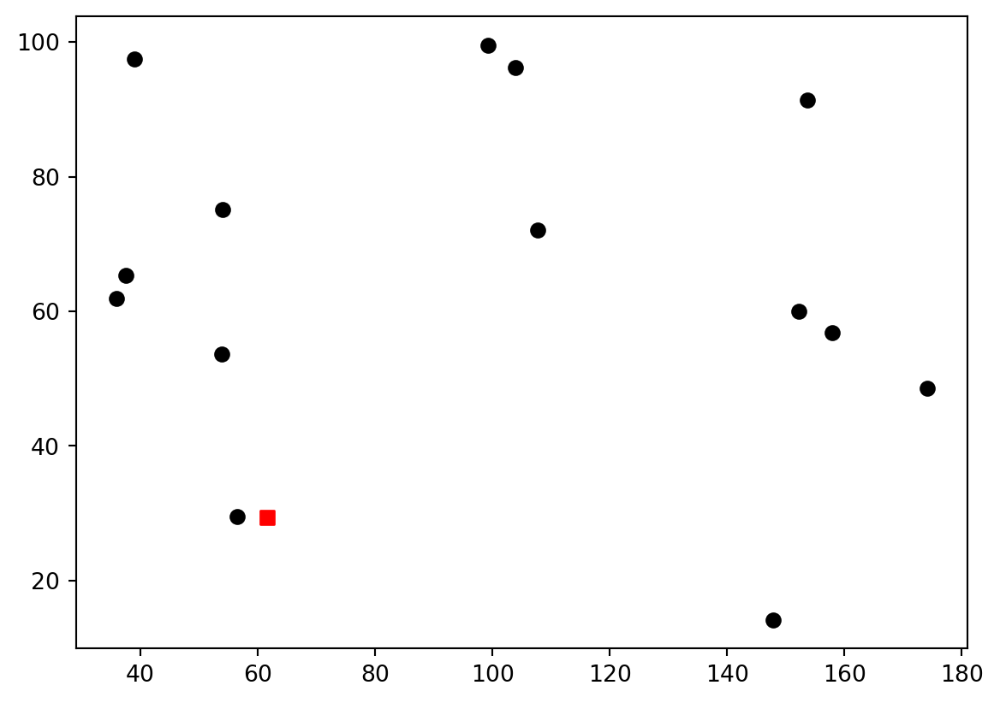

Minimum number of facilities wşth coverage distance Dmax, co-located with demand points.
N: number of demand points
yj = 1, if a facility is opened at location j; 0, o.w.
xj = 1, if node i is served by facility at j: 0, o.w
dij : euclidian distance between nodes i and j
/*********************************************
* OPL 22.1.1.0 Model
* Author: beyza
* Creation Date: 31 Mar 2024 at 17:49:03
*********************************************/
int N = ...;
float Dmax = ...;
range Ndemand = 1..N;
float a[Ndemand] = ...;
float b[Ndemand] = ...;
float d[Ndemand][Ndemand];
execute{
for(var i in Ndemand){
for(var j in Ndemand){
d[i][j] = Math.sqrt( (a[i]-a[j])*(a[i]-a[j]) + (b[i]-b[j])*(b[i]-b[j]) );
}}}
dvar boolean x[Ndemand][Ndemand];
dvar boolean y[Ndemand];
minimize sum(j in Ndemand) y[j];
subject to {
assignment:
forall(i in Ndemand)
sum(j in Ndemand)x[i][j] == 1;
facility_opening:
forall(i in Ndemand, j in Ndemand)
y[j] >= x[i][j];
//forall(j in Ndemand)
// facility_opening:
// N*y[j] >= sum(i in Ndemand)x[i][j];
distance:
forall(i in Ndemand)
Dmax >= sum(j in Ndemand)d[i][j]*x[i][j];
//forall(i in Ndemand, j in Ndemand)
// distance:
// Dmax >= d[i][j]*x[i][j];
}
vrp
import matplotlib.pyplot as pltimport numpy as npimport gurobipy as grbfrom scipy.spatial.distance import cdistN =15#number of nodesK =5# number of trucksQ =20# truck capacitynp.random.seed(26)x_coords = np.random.uniform(0, 200, N)y_coords = np.random.uniform(0, 100, N)q = np.random.uniform(1, 5, N) # waste quantitiesq[0]=0# Combine x and y coordinates into a single arraynLocs = np.column_stack((x_coords, y_coords))d = cdist(nLocs, nLocs)plt.figure()plt.scatter(nLocs[0][0],nLocs[0][1],marker ='s', color ='red')for i inrange(1,N): plt.scatter(nLocs[i][0],nLocs[i][1], color ='black')

#create a modelmodel=grb.Model('VRP')#decision variablesx = model.addVars(N, N, vtype = grb.GRB.BINARY, name ='x')u = model.addVars(N, vtype = grb.GRB.CONTINUOUS, ub=Q, name ='u')#define objectiveobjective = grb.quicksum(x[i,j]*d[i,j] for i inrange(N) for j inrange(N))model.setObjective(objective, grb.GRB.MINIMIZE)#add constraintsmodel.addConstr(grb.quicksum(x[0,j] for j inrange(1,N)) == K)model.addConstr(grb.quicksum(x[i,0] for i inrange(1,N)) == K)for j inrange(1,N): model.addConstr(grb.quicksum(x[i,j] for i inrange(N) if i!=j) ==1)for i inrange(1,N): model.addConstr(grb.quicksum(x[i,j] for j inrange(N) if i!=j) ==1)for i inrange(N):for j inrange(1,N):if i!=j: model.addConstr(u[j]-u[i]+Q*(1-x[i,j])>=q[j])model.setParam('TimeLimit',120)model.optimize()
plt.figure()plt.scatter(nLocs[0][0],nLocs[0][1],marker ='s', color ='red')for i inrange(1,N): plt.scatter(nLocs[i][0],nLocs[i][1], color ='black')for i inrange(N):for j inrange(N):if x[i,j].x>0.9:# print(i,j,x[i,j].x) plt.plot([nLocs[i][0],nLocs[j][0]],[nLocs[i][1],nLocs[j][1]],color='blue')